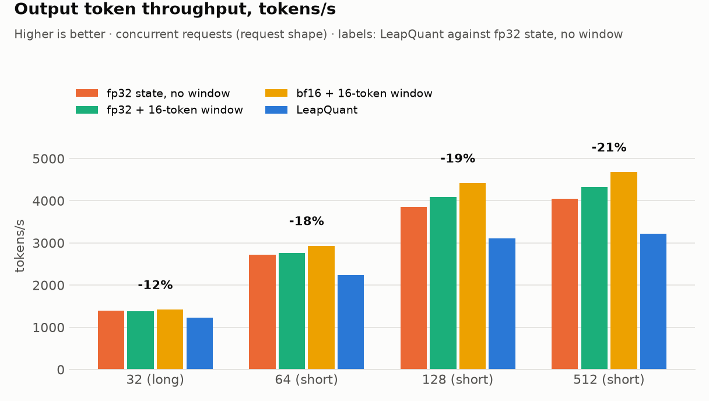
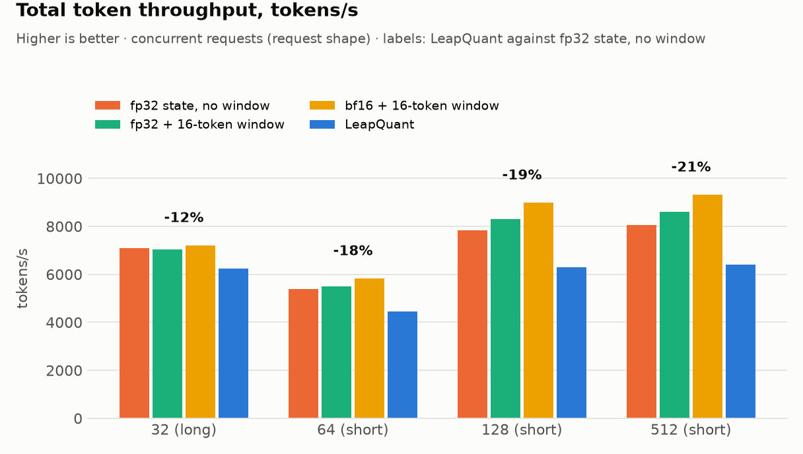
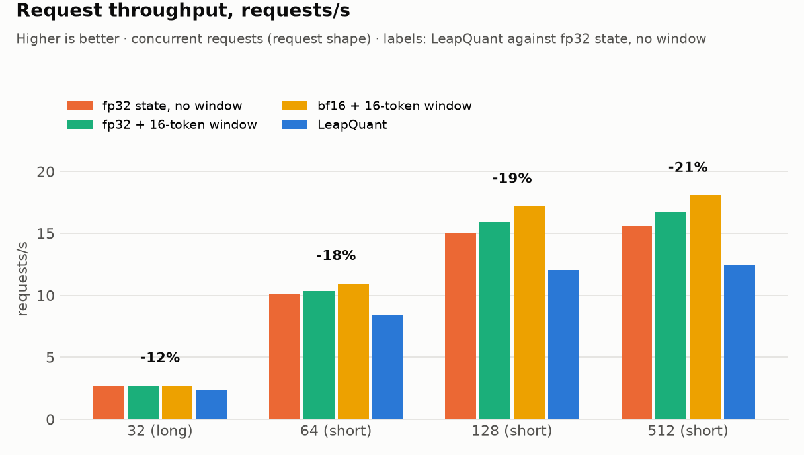
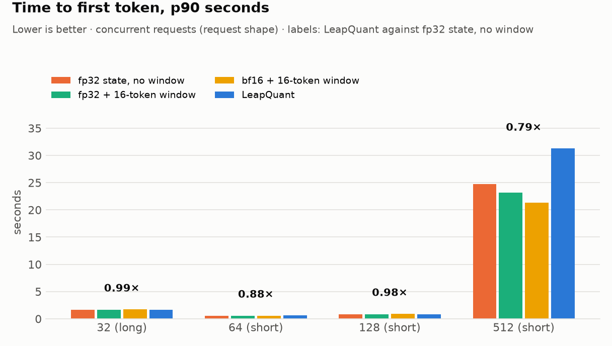
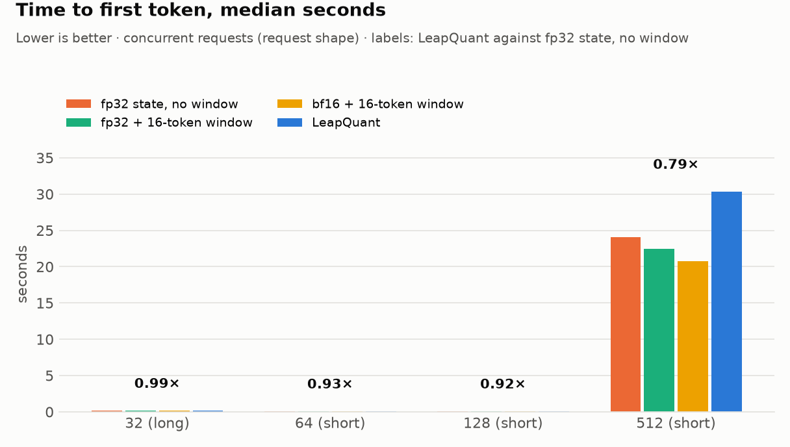
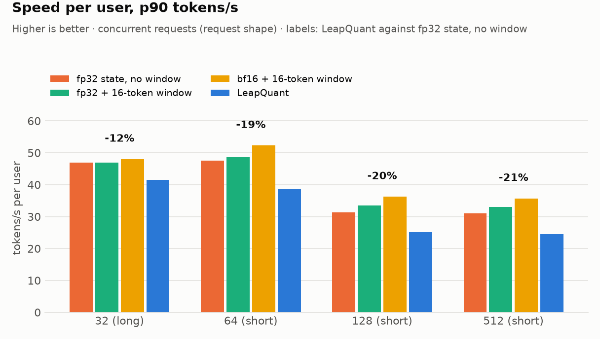
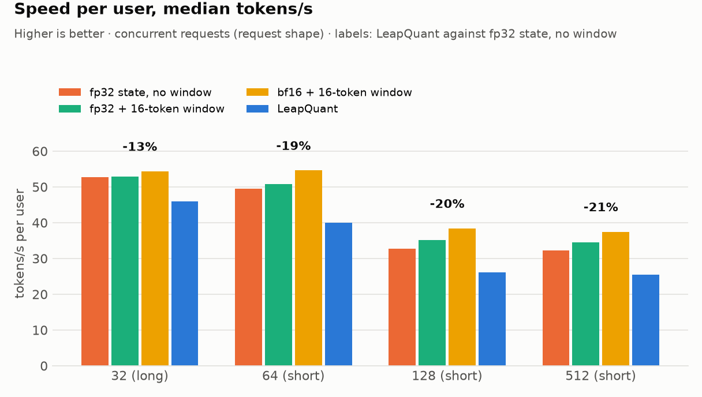
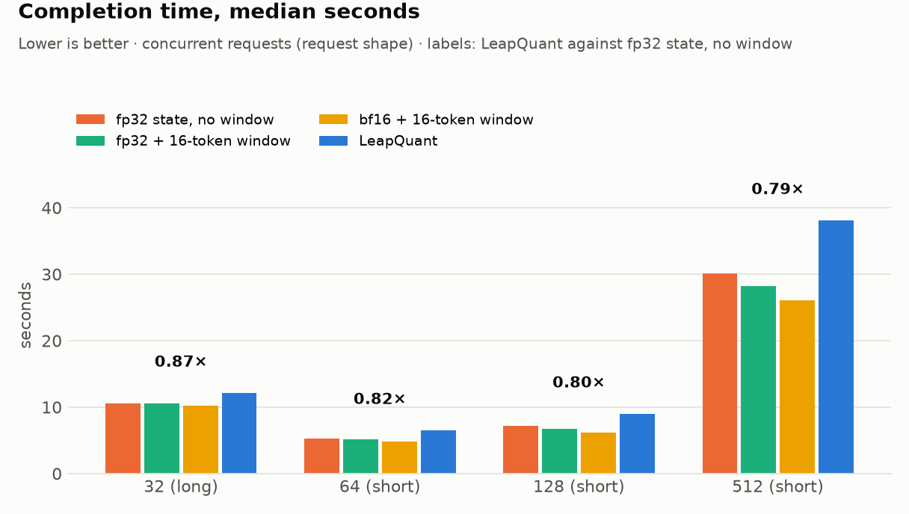

Serving: throughput, time to first token, speed per user
Qwen3.5-9B on one GPU, SGLang, at several numbers of concurrent requests. One chart and one table per metric, as in the benchmark reports this layout follows.
Third round. The three baselines are the logs of round 2 (same machine, same limits: 384 state slots, at most 128 requests running; "512" is 128 running plus a queue).
LeapQuant here: all requests fold their window on the same decode step (new in the SGLang patch). That removes about 4 ms per decode step, and makes one step in 16 slow: see the p99 inter-token latency in the full table.
LeapQuant here: all requests fold their window on the same decode step (new in the SGLang patch). That removes about 4 ms per decode step, and makes one step in 16 slow: see the p99 inter-token latency in the full table.
Output token throughput, tokens/s

| Concurrent requests | fp32 state, no window | fp32 + 16-token window | bf16 + 16-token window | LeapQuant | LeapQuant against fp32 state, no window |
|---|---|---|---|---|---|
| 32 (long) | 1395 | 1385 | 1417 | 1226 | -12% |
| 64 (short) | 2717 | 2762 | 2930 | 2237 | -18% |
| 128 (short) | 3850 | 4084 | 4417 | 3103 | -19% |
| 512 (short) | 4049 | 4318 | 4678 | 3214 | -21% |
Total token throughput, tokens/s

| Concurrent requests | fp32 state, no window | fp32 + 16-token window | bf16 + 16-token window | LeapQuant | LeapQuant against fp32 state, no window |
|---|---|---|---|---|---|
| 32 (long) | 7088 | 7040 | 7202 | 6229 | -12% |
| 64 (short) | 5397 | 5488 | 5821 | 4445 | -18% |
| 128 (short) | 7828 | 8303 | 8980 | 6308 | -19% |
| 512 (short) | 8060 | 8596 | 9311 | 6396 | -21% |
Request throughput, requests/s

| Concurrent requests | fp32 state, no window | fp32 + 16-token window | bf16 + 16-token window | LeapQuant | LeapQuant against fp32 state, no window |
|---|---|---|---|---|---|
| 32 (long) | 2.66 | 2.64 | 2.70 | 2.34 | -12% |
| 64 (short) | 10.16 | 10.33 | 10.96 | 8.37 | -18% |
| 128 (short) | 14.98 | 15.89 | 17.19 | 12.07 | -19% |
| 512 (short) | 15.64 | 16.68 | 18.07 | 12.41 | -21% |
Time to first token, p90 seconds

| Concurrent requests | fp32 state, no window | fp32 + 16-token window | bf16 + 16-token window | LeapQuant | LeapQuant against fp32 state, no window |
|---|---|---|---|---|---|
| 32 (long) | 1.62 | 1.63 | 1.73 | 1.63 | 0.99× |
| 64 (short) | 0.53 | 0.58 | 0.56 | 0.61 | 0.88× |
| 128 (short) | 0.83 | 0.85 | 0.91 | 0.85 | 0.98× |
| 512 (short) | 24.77 | 23.15 | 21.33 | 31.27 | 0.79× |
Time to first token, median seconds

| Concurrent requests | fp32 state, no window | fp32 + 16-token window | bf16 + 16-token window | LeapQuant | LeapQuant against fp32 state, no window |
|---|---|---|---|---|---|
| 32 (long) | 0.13 | 0.13 | 0.13 | 0.13 | 0.99× |
| 64 (short) | 0.04 | 0.04 | 0.04 | 0.04 | 0.93× |
| 128 (short) | 0.04 | 0.04 | 0.04 | 0.05 | 0.92× |
| 512 (short) | 24.03 | 22.49 | 20.72 | 30.30 | 0.79× |
Speed per user, p90 tokens/s

| Concurrent requests | fp32 state, no window | fp32 + 16-token window | bf16 + 16-token window | LeapQuant | LeapQuant against fp32 state, no window |
|---|---|---|---|---|---|
| 32 (long) | 47.0 | 47.0 | 48.0 | 41.5 | -12% |
| 64 (short) | 47.6 | 48.7 | 52.3 | 38.6 | -19% |
| 128 (short) | 31.3 | 33.4 | 36.2 | 25.1 | -20% |
| 512 (short) | 31.0 | 33.0 | 35.7 | 24.5 | -21% |
Speed per user, median tokens/s

| Concurrent requests | fp32 state, no window | fp32 + 16-token window | bf16 + 16-token window | LeapQuant | LeapQuant against fp32 state, no window |
|---|---|---|---|---|---|
| 32 (long) | 52.8 | 52.8 | 54.4 | 46.0 | -13% |
| 64 (short) | 49.5 | 50.9 | 54.6 | 40.0 | -19% |
| 128 (short) | 32.8 | 35.2 | 38.4 | 26.2 | -20% |
| 512 (short) | 32.3 | 34.5 | 37.5 | 25.5 | -21% |
Completion time, median seconds

| Concurrent requests | fp32 state, no window | fp32 + 16-token window | bf16 + 16-token window | LeapQuant | LeapQuant against fp32 state, no window |
|---|---|---|---|---|---|
| 32 (long) | 10.5 | 10.5 | 10.2 | 12.1 | 0.87× |
| 64 (short) | 5.3 | 5.2 | 4.8 | 6.5 | 0.82× |
| 128 (short) | 7.2 | 6.8 | 6.2 | 9.0 | 0.80× |
| 512 (short) | 30.2 | 28.2 | 26.0 | 38.1 | 0.79× |
Full measurements
| Configuration | Shape | Concurrency | Output token throughput (tok/s) | Total token throughput (tok/s) | Request throughput (req/s) | Median TTFT (ms) | P90 TTFT (ms) | P99 TTFT (ms) | Median TPOT (ms) | P90 TPOT (ms) | Median ITL (ms) | P90 ITL (ms) | Median E2E Latency (ms) | Successful requests | Benchmark duration (s) |
|---|---|---|---|---|---|---|---|---|---|---|---|---|---|---|---|
| fp32 state, no window | long | 32 | 1394.62 | 7088.22 | 2.66 | 126.01 | 1622.56 | 2398.07 | 18.95 | 21.28 | 14.44 | 14.85 | 10502.71 | 128.00 | 48.10 |
| fp32 + 16-token window | long | 32 | 1385.19 | 7040.29 | 2.64 | 126.19 | 1631.56 | 2405.54 | 18.93 | 21.28 | 14.40 | 14.92 | 10515.60 | 128.00 | 48.42 |
| bf16 + 16-token window | long | 32 | 1417.05 | 7202.18 | 2.70 | 129.08 | 1730.12 | 2536.81 | 18.39 | 20.83 | 13.74 | 14.25 | 10199.98 | 128.00 | 47.34 |
| LeapQuant | long | 32 | 1225.53 | 6228.79 | 2.34 | 126.75 | 1630.76 | 2408.13 | 21.74 | 24.10 | 14.69 | 25.73 | 12094.77 | 128.00 | 54.73 |
| fp32 state, no window | short | 64 | 2716.88 | 5397.34 | 10.16 | 41.37 | 531.51 | 674.32 | 20.20 | 21.02 | 15.81 | 37.68 | 5281.43 | 256.00 | 25.19 |
| fp32 + 16-token window | short | 64 | 2762.36 | 5487.71 | 10.33 | 41.57 | 581.77 | 700.89 | 19.66 | 20.55 | 15.16 | 37.51 | 5157.05 | 256.00 | 24.77 |
| bf16 + 16-token window | short | 64 | 2930.13 | 5820.99 | 10.96 | 39.69 | 559.95 | 708.43 | 18.31 | 19.13 | 13.94 | 34.97 | 4799.65 | 256.00 | 23.35 |
| LeapQuant | short | 64 | 2237.43 | 4444.88 | 8.37 | 44.58 | 605.55 | 693.81 | 25.01 | 25.91 | 15.70 | 49.04 | 6475.41 | 256.00 | 30.58 |
| fp32 state, no window | short | 128 | 3850.41 | 7828.24 | 14.98 | 43.38 | 832.06 | 1399.06 | 30.48 | 31.98 | 21.02 | 53.58 | 7216.60 | 512.00 | 34.17 |
| fp32 + 16-token window | short | 128 | 4084.10 | 8303.34 | 15.89 | 42.96 | 853.93 | 1411.78 | 28.41 | 29.93 | 18.74 | 51.62 | 6766.37 | 512.00 | 32.22 |
| bf16 + 16-token window | short | 128 | 4416.83 | 8979.81 | 17.19 | 41.11 | 911.25 | 1441.88 | 26.03 | 27.59 | 16.67 | 49.97 | 6201.36 | 512.00 | 29.79 |
| LeapQuant | short | 128 | 3102.75 | 6308.17 | 12.07 | 47.23 | 850.99 | 1409.20 | 38.19 | 39.84 | 24.38 | 73.66 | 8968.72 | 512.00 | 42.41 |
| fp32 state, no window | short | 512 | 4049.48 | 8060.15 | 15.64 | 24027.74 | 24767.64 | 26326.55 | 31.00 | 32.28 | 22.02 | 47.75 | 30150.96 | 2048.00 | 130.94 |
| fp32 + 16-token window | short | 512 | 4318.44 | 8595.50 | 16.68 | 22489.10 | 23149.24 | 24568.38 | 28.98 | 30.29 | 19.83 | 45.86 | 28230.84 | 2048.00 | 122.79 |
| bf16 + 16-token window | short | 512 | 4677.77 | 9310.71 | 18.07 | 20719.91 | 21333.07 | 22564.89 | 26.69 | 28.00 | 17.72 | 43.86 | 26018.05 | 2048.00 | 113.36 |
| LeapQuant | short | 512 | 3213.61 | 6396.42 | 12.41 | 30299.75 | 31266.04 | 33402.84 | 39.15 | 40.84 | 26.90 | 59.84 | 38056.46 | 2048.00 | 165.00 |
Metrics
- Output token throughput, tokens/s: generated tokens per second, all requests together.
- Total token throughput, tokens/s: input plus generated tokens per second.
- Request throughput, requests/s: completed requests per second.
- Time to first token, median and p90, seconds: the delay before generation starts.
- Speed per user, median and p90, tokens/s: 1000 ÷ time per output token of a request. The p90 figure is the speed that 90% of requests reach or beat.
- Completion time, median, seconds: the whole request.
Setup
Long shape: 4,096 input and 1,024 output tokens. Short shape: 512 and 512. Random prompts, sglang.benchmark.serving.
What it does not show
Answer quality, and any GPU other than the one of this run. Source: serving_*.log.
Generated 2026-11-13 11:04 from results/run-quick-einstein-v3 by reports/generate_reports.py. All reports.